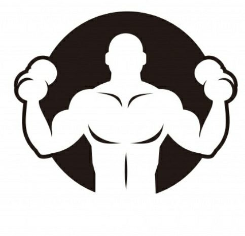
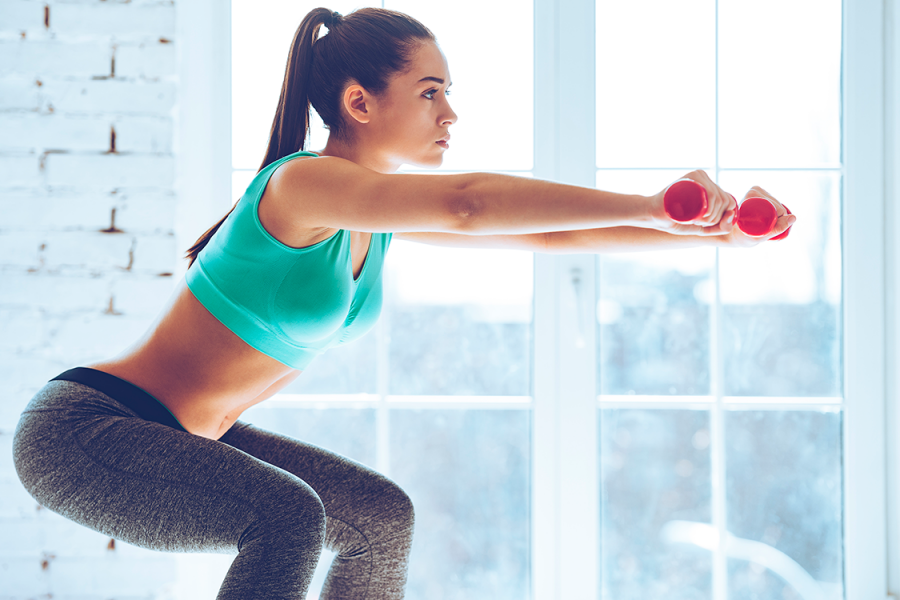

Pourquoi faire des squats ?
Le squat est un mouvement de musculation poly-articulaire utile à toutes les disciplines sportives et idéal pour
muscler toute la partie basse du corps.
Cet exercice est considéré parmi le plus efficace pour muscler les fesses et les cuisses , vous devait vous
entraîner 3 à quatre fois par semaine pour avoir d’excellent résultats et de suivre un régime alimentaire sain .
Je vous conseille de commencer par 10 kg puis d’augmenter le volume chaque mois pour avoir de meilleur résultat .
Vous l’aurez compris, le squat est donc très intéressant à intégrer dans sa routine d’entrainement car il permet de
travailler plusieurs groupes musculaires en un seul exercice.
QUELS SONT LES BÉNÉFICES DU SQUAT ?
Les bénéfices du squat sont très nombreux. Je vais donc en citer quelques uns, après quoi vous ne pourrez plus passer
à côté d’une barre sans y penser.
• Amélioration de la posture : Garder les abdominaux gainés et la poitrine sortie va permettre de renforcer vos
muscles profonds, ce qui à long terme va améliorer votre posture et votre maintien. Cela se traduit par une
diminution des risques de blessures au dos, une meilleure respiration, une digestion plus rapide, et aussi une bien
meilleure allure.
• Augmente votre métabolisme : Grâce au grand recrutement musculaire de cet exercice, le squat va bien sûr vous
permettre de gagner en masse musculaire. Et qui dit masse musculaire plus importante dit un métabolisme plus
efficace.
• Perte de gras plus rapide : Si le squat booste votre métabolisme, cela veut dire que vous perdez plus de calories
au repos. Vous augmentez donc naturellement votre dépense énergétique.
• Réduit le risque de blessures graves : Le travail intensif des muscles du bas du corps mais aussi de la sangle
abdominale et du dos renforce la posture, l’équilibre, ainsi que la flexibilité et la mobilité de vos articulations.
• Amélioration des capacités physiques : En gagnant en explosivité, le squat peut aider à courir plus vite et sauter
plus haut.
• Amélioration de l’esthétique: Soyons honnêtes,des fessiers fermes et sculptés sont particulièrement plaisants
d’un point de vue esthétique, attirant et séduisant , on ne peut pas s’empêcher de les regarder :)
Application
Tenez-vous avec les pieds écartés de la largeur de vos épaules et vos bras tendus vers l’avant, puis baissez votre
corps jusqu’à ce que vos cuisses soient parallèles au sol .
Vos genous doivent plier dans la même direction que vos orteils.
Revenez à la position de départ et répétez l'exercice en inspirant lors de la descente et en expirant lors de la montée .
Attention, il est très important de maîtriser la descente en la ralentissant légèrement et d’accélérer la phase
concentrique de la remontée en prenant appui sur les talons. Durant tout l’exercice, veillez à garder le dos
légèrement cambré et la poitrine sortie, mais n’arrondissez pas votre dos et ne vous penchez pas en avant. Votre
centre de gravité doit se tenir en arrière, entre vos talons qui ne doivent jamais décoller du sol et poussez vos
fesses vers l’arrière jusqu’à avoir les cuisses parallèles au sol.
Muscles travaillés
Fessiers ,quadriceps,cuisses,ishio-jambiers,bas du corps
Alors qu’est ce que vous attendez , on commence 🙂